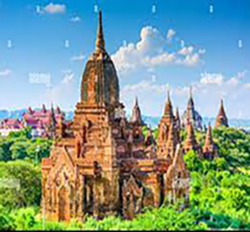

Myanmar,[a] officially the Republic of the Union of Myanmar,[b] also known as Burma (the official name until 1989), is a country in Southeast Asia. It is the largest country by area in Mainland Southeast Asia,
and has a population of about 54 million as of 2017.[10] Myanmar is bordered by Bangladesh and India to its northwest, China to its northeast, Laos and Thailand to its east and southeast, and the Andaman Sea and the Bay of Bengal to its
south and southwest. The country's capital city is Naypyidaw, and its largest city is Yangon (Rangoon)see more ...
Yangon (Burmese: ရန်ကုန်; pronounced [jàɰ̃ɡòʊɰ̃ mjo̰]; lit.'End of Strife'), formerly spelled as Rangoon, is the capital of the Yangon Region and the largest city of Myanmar (also known as Burma). Yangon served
as the capital of Myanmar until 2006, when the military government relocated the administrative functions to the purpose-built capital city of Naypyidaw in north central Myanmar.With over 7 million people, Yangon is Myanmar's most populous
city and its most important commercial centre. Yangon boasts the largest number of colonial-era buildings in Southeast Asia,and has a unique colonial-era urban core that is remarkably intact. see more...

Bagan (Burmese: ပုဂံ; MLCTS: pu.gam, IPA: [bəɡàɰ̃]; formerly Pagan) is an ancient city and a UNESCO World Heritage Site in the Mandalay Region of Myanmar.[1] From the 9th to 13th centuries, the city was the capital
of the Bagan Kingdom, the first kingdom that unified the regions that would later constitute Myanmar. During the kingdom's height between the 11th and 13th centuries, more than 10,000 Buddhist temples, pagodas and monasteries were constructed
in the Bagan plains alone,[2] of which the remains of over 2200 temples and pagodas survive.The Bagan Archaeological Zone is a main attraction for the country's nascent tourism industry. see more ...